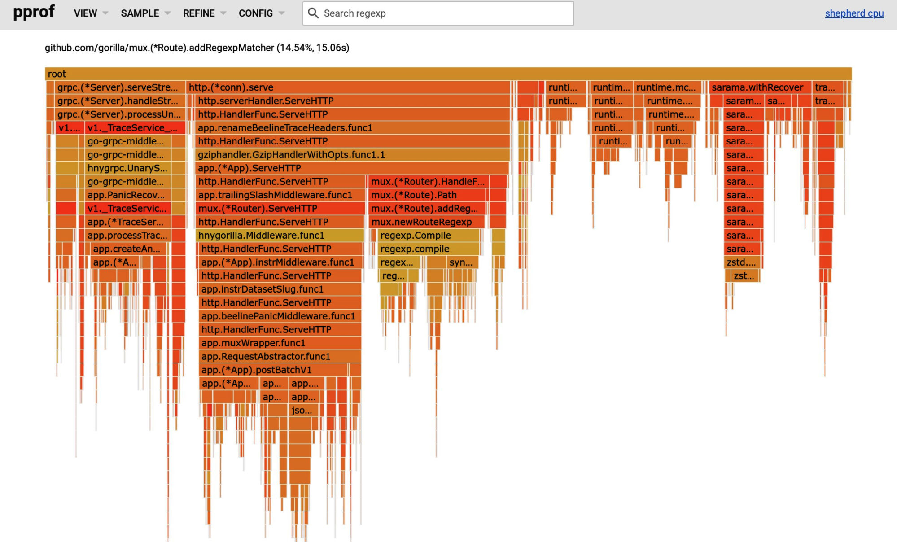
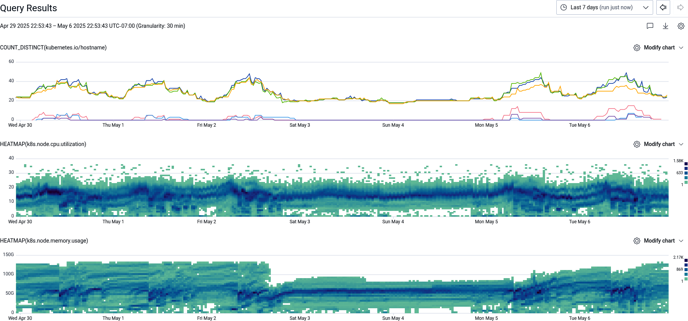
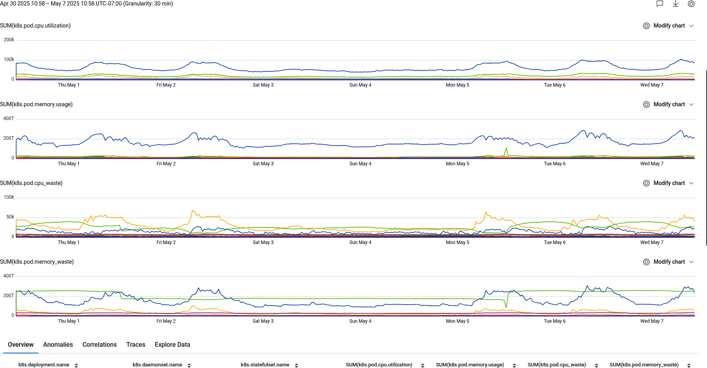
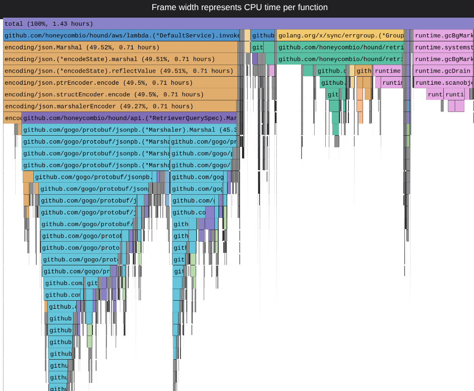
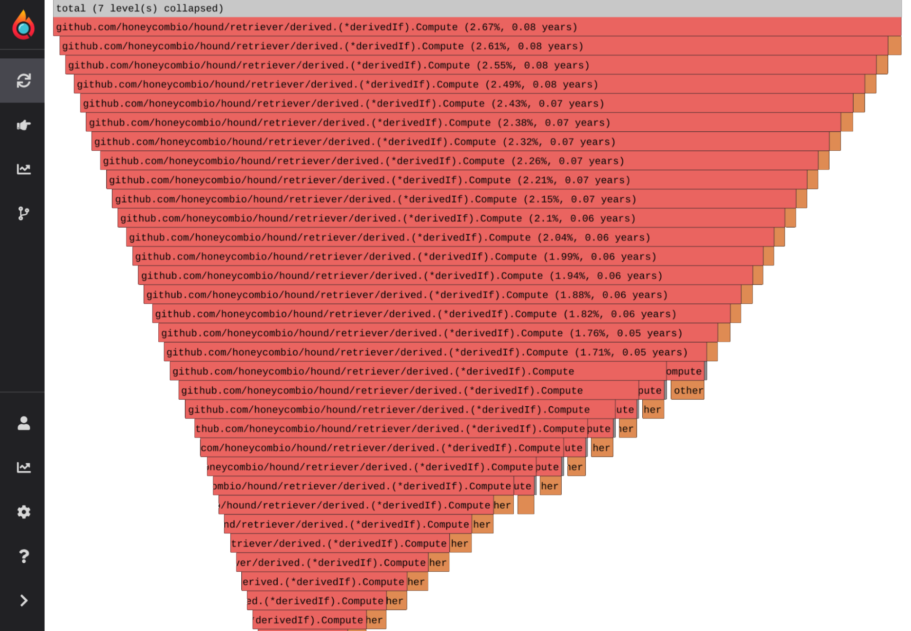

<title>第 20 章　效能工程與可觀測性 — 《可觀測性工程》第二版</title>
<link rel="stylesheet" href="style.css">

<nav class="chapnav">
    <a href="ch19.html">← 上一章</a>
    <a href="index.html">目錄</a>
    <a href="ch21.html">下一章 →</a>
  </nav>
<main>
  <header class="masthead">
    <span class="eyebrow">Observability Engineering · Second Edition</span>
    
    <h1 class="title serif">第 20 章<br>效能工程與可觀測性</h1>
    <div class="rule"></div>
  </header>

  <p>可觀測性經常被定位為一種可靠性工具——確保系統正常運作並修復故障。然而，成熟的可觀測性實務同時也是效能工程的基礎：亦即有紀律地追求讓系統更快、更有效率、更具成本效益。在本章中，我們將探討如何運用這兩個領域之間的重疊之處，從被動救火轉為主動優化。</p>
<h2 class="section serif">效能工程的理由</h2>
<p>想像一下,你遇到一個神秘的錯誤,悄悄地為服務中的每個請求增加延遲。這正是我們團隊當時面臨的情況,也是我們展開性能工程之旅的導火線。</p>
<p>2021 年 12 月,Honeycomb 工程團隊驚訝地發現,根據負載平衡器日誌測得的ingest 端點請求延遲,與應用程式追蹤中自動檢測跨度所測得的數值之間存在落差。這種現象在對 ingest 服務端點發出的 POST 請求中最為明顯,這類請求傳送的是單一包含大量屬性的事件,而非較大的批次。時間不知怎麼地憑空消失了,伺服器端只需十分之幾毫秒即可完成的請求,在負載平衡器上卻顯示為個位數毫秒。</p>
<p>傳送到我們批次端點的較大請求,同樣出現了資料來源之間相差個位數毫秒的差異,但由於批次大小不一,可能需要數十到數百毫秒不等,因此這個差異佔請求時間的比例較不明顯,也就較不易察覺。在傳統可觀測性檢測所能觀察到的範圍之外,有某個因素正在拖慢每一個請求的速度。</p>
<p>由於沒有具體的想法，加上想排除追蹤本身的開銷就是問題所在的可能性，我們使用 Go 程式語言內建的效能分析（performance profiling）支援來尋找線索。我們在 pod 上公開了 net/http/pprof 端點，因此只需臨時執行 go tool pprof 工具，即可取得火焰圖（見圖 20‑1）。</p>
<figure class="plate">
<figcaption>圖 20‑1。一張 Go pprof 火焰圖，顯示在 mux.newRouteRegexp 內的regexp.Compile 花費了異常多的時間，其 CPU 時間與 ServeHTTP 端點程式碼相近。</figcaption></figure>
<p>手動使用我們自身常駐追蹤以外的獨立工具，雖然對調查造成了阻礙，但我們仍能根據 CPU 過度耗用週期的位置找出問題所在。regexp.Compile 路徑不應該消耗整個處理程序 17% 的 CPU 並拖慢請求速度。在正常運作下，我們原本預期正規表示式應該只在啟動時編譯一次，之後就重複使用。為什麼我們會一次又一次地重新初始化 HTTProuter mux 並重新解析其設定呢？</p>
<p>深入研究程式碼後確認，HTTP 路由器在每次請求後都會被丟棄，而不是作為單例重複使用。修正這個影響客戶的效能緩慢問題，只需五行程式碼（見範例20‑1）。而且光靠追蹤是無法發現這個問題的，因為追蹤掛鉤（hook）是在mux router 已經被實例化之後才被呼叫的——也就是每個請求都已經比對到對應路由之後。</p>
<p>範例 20‑1。這個錯誤修復的完整五行 Git diff，將 initializeRouter() 抽取成一個方法，並在 Start() 函式中呼叫，而不是每次 ServeHTTP() 請求都呼叫它。</p>
<pre class="code">@@ -<span class="tok-number">115</span>,<span class="tok-number">6</span> +<span class="tok-number">115</span>,<span class="tok-number">7</span> @@ <span class="tok-keyword">type</span> App <span class="tok-keyword">struct</span> {
     zstdDecoders <span class="tok-keyword">chan</span> *zstd.Decoder
     grpcServer *grpc.Server
+    router     http.Handler
 }
 <span class="tok-keyword">func</span> (a *App) Start(ctx context.Context) error {
@@ -<span class="tok-number">149</span>,<span class="tok-number">6</span> +<span class="tok-number">150</span>,<span class="tok-number">7</span> @@ <span class="tok-keyword">func</span> (a *App) Start(ctx context.Context) error {
         <span class="tok-keyword">return</span> err
     }
+    a.initializeRouter()
     a.server, err = hd.ListenAndServe(&amp;http.Server{
         Addr:        a.Port,
         Handler:     renameBeelineTraceHeaders(gz(a)),
@@ -<span class="tok-number">448</span>,<span class="tok-number">5</span> +<span class="tok-number">450</span>,<span class="tok-number">8</span> @@ <span class="tok-keyword">func</span> (a *App) ServeHTTP() {
     <span class="tok-comment">// Allow cross-origin API operation from browser js</span>
     w.Header().Set(<span class="tok-string">"Access-Control-Allow-Origin"</span>, <span class="tok-string">"*"</span>)
+    a.router.ServeHTTP(w, r)
+}
+<span class="tok-keyword">func</span> (a *App) initializeRouter() {
     router := mux.NewRouter()</pre>
<p>這次調查促使我們將性能工程的知識推廣到整個團隊。我們的性能之旅與本書先前提倡的轉變相似——從被動除錯轉向主動除錯，從單點故障轉向團隊層級的可觀測性專業能力。性能工程與成本控制在許多目標上與可觀測性相同，理想情況下能受益於共用的工具。</p>
<p>長久以來，性能工程師所使用的工具，與維運團隊或軟體工程團隊相比，一直是各自獨立、互不相通的。我們雙方一直努力想要達成的其實都是可觀測性，但工具卻限制了我們去檢視堆疊中不同的層級、不同的粒度。在理想的世界中，統一的可觀測性將能為軟體交付與優化的所有面向提供實用的功能，無論他們是在調查個別的組合語言指令，還是端到端的用戶旅程。是時候讓我們的學科整合起來，專注於賦能每一位工程師，讓他們能在營運環境中掌控自己的程式碼與系統了。</p>
<div class="callout"><p>雖然我們無法完整涵蓋性能工程的所有細節，只能聚焦於它與分散式系統可觀測性的重疊之處，但 Brendan Gregg 的經典著作 *BPF Performance Tools*（Addison‑Wesley，2019 年）與 *Systems Performance*（Pearson，2020 年）對於想進一步深入探索此領域的讀者來說，都是很好的資源。</p></div>
<h2 class="section serif">建立性能工程實務</h2>
<p>性能工程滿足兩項關鍵業務需求：降低成本以改善損益，以及加快用戶體驗速度。雖然為了學術樂趣而過度優化某個特定函式確實有趣，但唯有能實際帶動具體指標的改變，才算真正產生影響。針對任何一項實驗，你都應該先蒐集性能與成本的基準資料，之後再進行測試。你是否正在處理程式碼庫中能帶來最大影響的部分？你能否量化未來可能達成的任何改善——無論是延遲、資料量、金額，還是有效的二氧化碳排放噸數？若從更廣泛的角度思考性能工程職能，唯有在被賦予正確的任務與適當範疇的前提下，投入專職人力才有意義。</p>
<p>在許多情況下，若雲端帳單金額不高，相對於用來優化的工程師薪資成本而言，投資性能工程可能根本不划算，還不如用這些資源來建構新功能或維持可靠性。這與評估投入自動化的時間是否值得（相較於自動化能節省的時間）的考量類似，我們建議開發者避免過早優化，也就是當薪資與機會成本超過成本或用戶體驗性能提升的效益時，就不該貿然投入。然而，若完全不設任何防護機制，則可能導致資源浪費、支出過高，或是面向客戶的延遲逐漸攀升——整體而言，我們正在浪費大量資源，並可能加劇氣候危機。因此，即使你判斷現在還不是投入性能工程的時機，了解如何運用性能工程仍然具有價值。</p>
<p>對我們來說，這項投資是值得的，因為相對於我們的員工人數而言，我們的雲端費用相對較高——而且我們經營的是一家軟體即服務（SaaS）新創公司，毛利率和其他受工程影響的業務指標會直接影響公司的生存能力。我們刻意打造了可觀測性驅動開發的文化，這意味著我們的開發人員相對快速地接受了性能工程。</p>
<p>與可觀測性驅動開發一樣，性能工程需要找出最具影響力的可能變更、加入檢測、實施變更，然後在營運環境中檢視結果。團隊本身已具備好奇心與主人翁意識，但在初次嘗試性能工程時，卻受限於我們所採用的孤立工具的臨時性質。我們需要</p>
<p>以提升我們提供給開發團隊的工具的可用性，並讓這項實踐成為持續性的作業，而非一次性的行動。我們也刻意不建立獨立的知識庫，或成立專門的性能工程團隊。</p>
<h2 class="section serif">在不修改應用程式程式碼的情況下優化成本</h2>
<p>要讓性能工程進入團隊的工程路線圖，可能是一項挑戰。開發者比較喜歡的體驗是自動獲得性能與成本上的改善，而不需要額外花費心力去修改程式碼。所幸，若不想要求每個應用程式的開發者手動採取行動，仍有幾種在後端進行優化的選項。在本節中，你將學到三種免動手優化的技巧。</p>
<h2 class="section serif">基礎架構採購模式</h2>
<p>影響基礎架構整體成本最重要的因素之一，就是你所使用的運算平台類型。甚至在挑選具體的執行個體類型之前，你必須先根據開發者的使用體驗與經濟模型來選擇產品。我們指的不是在 m4.large 與 r5.xlarge 之間做選擇（雖然我們會在本章稍後討論這個主題）。取得運算容量共有六種模式：</p>
<p>• 資本支出（自行建置資料中心（Oxide Computer Company））</p>
<p>• 保留容量（AWS Savings Plans、Azure savings plans、Google 承諾／持續使用折扣）</p>
<p>• 持久性、固定容量（Amazon EC2、Azure 虛擬機器〔VM〕、Google Compute Engine）</p>
<p>• 可中斷、固定容量（Amazon EC2 Spot、Azure Spot VMs、Google Preemptible VMs）</p>
<p>• 持久性、彈性容量（AWS Fargate、Azure Container Apps、Google Cloud Run）</p>
<p>• 可中斷且靈活、適用於短時間請求（AWS Lambda、Azure Functions、Google Cloud Functions）</p>
<p>每一種取得基礎架構的方式，在金錢、客戶體驗以及維護所需的開發者時間上，都各有優缺點。採用像 Lambda 或 Azure Functions 這類函式即服務（FaaS）的方式，你可以達到完美的使用率──只有在軟體實際執行時才需付費。你不必擔心軟體系統層級的相依性或底層硬體。作為權衡，你每一 CPU 秒（或若你的供應商支援更細緻的計費方式，則是每一 CPU 毫秒）需要支付較高的單位成本，因為雲端供應商</p>
<p>假設由自己承擔容量管理的風險，並且無法賣出所有的容量池。而且如果雲端供應商需要為你的工作負載分配並啟動新容量，某些請求的處理時間可能會拉長。</p>
<p>執行整個虛擬機器（VM）而非使用無伺服器架構，代表你可以讓行程持續運作、將資料持久化到快取，或維持與相依項目的連線，讓請求回應速度快上許多。然而，即使沒有在使用伺服器，你仍然要為那段伺服器時間付費，而且必須確保在流量超乎預期時能夠及時擴展。而如果你使用的是自行代管的裸機而非 VM，每 CPU 小時的成本會低上許多，但你必須負擔硬體的資本支出，並自行承擔佈建與可用性的責任。</p>
<p>還有一些模型介於兩者之間——例如，購買預留容量，或使用一種混合式的無伺服器運算引擎，它會將底層的 VM 抽象化，並依照每個任務所消耗的 CPU 而非每個請求的持續時間來計價。當使用以 VM 為基礎的基礎架構時，你也可以透過容器協調（container orchestration）的方式，例如 Kubernetes，將多個應用程式打包進單一 VM，藉此獲得可觀的性能與成本優化。然而，關於容器化的討論在某種程度上與運算模型是正交的：無伺服器函式可以直接操作原始二進位檔，自行提供作業系統與容器；而在任何類型的底層運算（從裸機到Fargate）之上，都可以執行 Kubernetes、Red Hat OpenShift、Amazon Elastic Container Service 或其他容器協調器。</p>
<p>那麼你該選擇哪一種？嗯，這取決於你的系統如何擴展，也取決於你的用戶如何使用該應用程式。歸根究柢，你會希望混合搭配不同的能力，才能讓系統以最佳方式運作。舉例來說，你可能會想以 VM 模型執行資料庫伺服器，透過Amazon Relational Database Service 或 Google Cloud SQL 來管理；面向用戶的前端可能透過無伺服器架構執行；而批次或串流工作者集區則可能透過Fargate 或 Cloud Run 來指派。平台的選擇並非固定不變、一次決定終身的事。就長期而言，優化運算成本需要運用可觀測性資料來對應你的負載狀況，並決定何時做出改變——即使在不同運算模型之間遷移時，會需要一些維運工作。而且這些選項並非全有或全無，混合式做法也可能是合理的選擇。</p>
<p>如果你的工作負載有非常尖峰式的波動，你可能仍然會想嘗試以 Lambda 作為運算層，但如果遇到意外龐大的尖峰流量，這麼做可能會非常昂貴（或導致持續發生的冷啟動與連線遭拒）。然而，如果直接執行 Lambda 的時間與你的營收直接相關，這樣或許就沒有問題。無伺服器情境下的可觀測性相對直截了當，因為追蹤跨度（trace span）的持續時間可以直接換算成總價——事實上，你可以計算</p>
<p>諸如「請求成本」之類的可加總量度，直接在你選用的工具中將這些維度繪製成圖表！</p>
<p>可觀測性在蒐集資料以決定何時該遷移到新增的運算平台，或淘汰現有平台方面扮演關鍵角色。並行執行數量——不論是來自雲端供應商匯出的指標，還是來自並行追蹤跨度的數量——都能協助你判斷該向雲端供應商配置多少無伺服器並行量。使用率指標則能協助你判斷何時該將持續性工作負載轉向較偏向伺服器化、持續使用的模式。只要留意在朝向實體維運真正伺服器這條路上，管理與操作所需付出的人力成本即可。</p>
<h2 class="section serif">全機隊優化</h2>
<p>一旦確定好你所使用的運算模型，下一步就是盡可能壓低該運算成本。有三大類技巧可以嘗試：壓縮、優化，以及遷移架構。架構轉換是一項複雜的工程，相對地也有巨大的潛在回報，但在 Honeycomb，我們也持續進行許多規模較小的實驗與專案，以優化成本並提升客戶所感受到的性能。</p>
<p>假設你已設定好 SLO（見第 10 章與第 12 章），並具備良好的混沌工程文化，第一步是看看你實際上需要多少機器才能仍然達成這些 SLO。減少任務數量、降低每個任務的 CPU 與記憶體配置，並將自動擴展目標設定為更高的目標使用率——最終目標是關閉 VM。過去的標準做法是，執行超執行緒（hyperthreading）或同時多執行緒（SMT）的 Intel 架構實例時保持在 40% 使用率，而 Arm 實例（或任何停用 SMT 的實例）則保持在 70–80%。然而，這項建議對你所使用的核心種類來說可能已不再適用。持續測試直到延遲確實開始變差為止。你的可觀測性資料在此會派上用場，特別是考量到效能變差可能只影響一小部分複雜但關鍵的請求，而非影響整個系統。</p>
<p>務必針對供應商所提供的最新一代硬體進行測試。由於本書的改版間隔可能長達數年，我們所提出的任何具體建議都可能很快過時。在移除實例並縮減未充分利用的實例之後，檢查 CPU、記憶體與儲存之間的適當比例，可能有助於你節省成本。大多數雲端供應商對於較高 RAM 的配置會收取額外費用，同時也會針對使用其受管理的持久區塊儲存產品（例如 Amazon Elastic Block Store）收費。對於 I/O 密集型工作負載，你可能會發現直接連接到實例的 NVMe 硬碟（例如 AWS 的 ‑d 後綴與 i‑ 前綴實例，或 Azure 的 L 系列實例）比用於資料磁碟區的持久區塊儲存更為有利。</p>
<p>全機隊性能剖析（本章稍後會討論）也有助於找出程式碼瓶頸。這裡要先說明，這些瓶頸未必位於你自己的應用程式碼中，而可能出現在作業系統函式庫、核心（kernel），或常見的共用函式庫程式碼裡。如果你能找出並解決一個影響多個工作負載（而非僅僅一個）的性能問題，那可能非常值得投入。雖然為單一工作負載省下 1% 的 1% 效能可能不值得花超過幾分鐘的工程時間，但如果這 1% 能推廣到你所有的工作負載上，累積起來可能是一筆可觀的金額。詳情請參閱 Gang Ren 等人所著論文《Google‑Wide Profiling》。</p>
<p>另一個可能大幅提升性能與節省成本的途徑，是將二進位檔重新編譯，以在為雲端設計、效率更高的 CPU 架構上執行。我們先前曾在 Honeycomb 部落格上寫過，我們如何改用 AWS Graviton 執行個體切換至 Arm64 架構。Microsoft 提供 Cobalt Arm 執行個體，Google 則提供 Axion Arm 執行個體。每一代 Arm 處理器似乎都能帶來約 30% 的價格性能提升，超越 x86 架構的價格性能提升速度。這些選項都是與同世代 Intel 及 AMD 競品相比值得考慮的競爭對手，但可能需要你重新設定或重新編譯你的工作負載。</p>
<p>如今已有許多 Arm64 遷移指南，但基本步驟是先將容器或作業系統基礎映像檔切換為對應的架構，接著測試你的容器或二進位檔建置流水線在新架構與新基礎映像檔下是否仍能正常運作。接下來你需要測試部署新架構，發送具代表性的流量，然後進行負載測試，以確認其相對於原始設定的表現。請記住，由於大多數 Intel/AMD 執行個體使用 SMT，而 Arm 並不使用，你可能會發現讓Arm64 執行個體以更高的飽和度運行反而更安全，因為它不會與自身的工作負載互相爭用資源。務必測試到臨界飽和／故障點，才能看到真實的性能與封裝收益，而非表面上的結果！</p>
<h2 class="section serif">Kubernetes 的成本優化</h2>
<p>如果你的工作負載使用 Kubernetes，前一節提到的技巧可以幫助你就底層架構與規格做出更有效率的選擇。Kubernetes 也能讓你更有效率地利用機器，將多個工作負載封裝到同一批主機上，確保一個消耗大量 CPU 但佔用少量RAM 的畸形工作負載，能與另一個消耗少量 CPU 但需維持大量 RAM 狀態的工作負載搭配，從而更好地利用容量，不致有資源被閒置浪費。</p>
<p class="fn">1 Gang Ren、Eric Tune、Tipp Moseley、Yixin Shi、Silvius Rus 與 Robert Hundt，《Google‑Wide Profiling: A Continuous Profiling Infrastructure for Data Centers》，IEEE Micro 30 卷 4 期（2010 年）：65–79。</p>
<p>使用 Kubernetes 部署的第一個技巧——由於它具備容錯與自動任務遷移的概念——就是擁抱基礎設施的靈活性。如果你的程式碼不需要保留大量本地狀態，並且能夠容忍在約兩分鐘的跛鴨期（lame duck period）內於各實例間進行週期性遷移，你會發現可中斷實例（interruptible instances）非常適合你的工作負載。透過 Kubernetes 的 Karpenter 外掛（或一般的自動擴展群組），你可以在現貨（spot）或可中斷實例市場中受益於實例的靈活性。只要確保你使用相關的 Node Termination Handler 外掛，在節點終止之前優雅地將工作負載移出即可！</p>
<p>衡量變更的影響需要搭配你目前的可觀測性工具鏈運作。除了在每個節點上以DaemonSet 形式執行 OpenTelemetry Collector 之外，你不需要任何其他特殊工具即可理解並優化 Kubernetes 叢集的效率。安裝搭配 kubelet stats receiver 與 k8sattributes processor 的 OpenTelemetry Collector，是了解叢集健康狀態與行為的強大工具。</p>
<p>在檢視 Kubernetes 叢集資料時，視覺化層是最關鍵的部分。每個 pod 以及整體每個節點的飽和度與利用率可能存在很大的差異，因此百分位數往往會造成誤導。像圖 20‑2 所示的熱力圖（heatmap），是觀察節點狀況的較佳方式，可以看出你是否正「觸頂」100% 飽和度，並因此面臨請求在存取 CPU 時被阻塞、拖慢吞吐量並延遲用戶回應的風險。</p>
<figure class="plate">
<figcaption>圖 20‑2。一組圖表，顯示每個可用區域中各實例類型的不同主機數量，以及顯示為期一週內 CPU 與記憶體使用量的彙總熱力圖。</figcaption></figure>
<p>透過了解每個 Kubernetes 節點上的負載分布狀況，就能找出負載過重的熱點，以及節點未被充分利用的欠飽和情形。針對這些異常值進行統計分析，可能會揭露某些實例規格（instance shape）利用率特別差、縮容延遲，或其他導致叢集運作不如預期的因素。任何附加在中繼資料上的欄位都有幫助，例如節點群組、實例類型、架構或可用區域。</p>
<p>為了進一步除錯叢集擴展的行為，Kubernetes 貼心地從其控制平面發出日誌資料，包括來自 Cluster Autoscaler（CAS）或 Karpenter 程序的日誌。將這些日誌匯入你的可觀測性工具，可以揭露在特定時間建立或移除特定類型節點的決策背後的原因。</p>
<p>即使沒有繪製在資源圖表上，一個簡單的優化機會就是移除多餘的開機磁碟區大小。磁碟空間最常用於儲存日誌，但若日誌已匯出至您慣用的可觀測性工具或冷儲存，就無需在磁碟上保留太多份。此外，也請考慮實例的 NVMe 儲存是否比受管遠端資料磁碟區更為合適。</p>
<p>除了節點層級的優化之外，要如何找出在 Kubernetes 上進行工作負載層級成本節省的最大機會呢？將每個服務名稱或 DaemonSet 名稱所使用的 CPU 與記憶體總和繪製出來，可以幫助你找出 CPU 與記憶體用量最大的消耗者，接著再進一步檢視追蹤與剖析（profiling）資料。範例請參見圖 20‑3。畢竟，當工程時間有限時，最好優先解決影響最大的問題；節省 10% 中的 1% 會比節省 1% 中的 5% 更划算！</p>
<p>在 Kubernetes 指標中，對你最有幫助的莫過於 pod CPU 使用率、pod 記憶體請求（request）以及限制（limit）使用量這幾項數值。這些用量代表的是無法透過巧妙的裝箱（bin‑packing）與擴展技巧來消除的真實需求。因此，說到底，要推動任何性能工程方面的努力，都必須從降低這項需求著手。不過，在檢視某個部署（deployment）中各 pod 的用量時，你應該留意可觀測性工具可能帶來的陷阱。在滾動更新（rollout）期間，pod 數量的預期激增，會使得較大時間窗口內的用量被灌水；同樣地，那些在時間窗口開始後不久就終止的 pod，以及在時間窗口結束前不久才啟動的 pod，也會造成類似的效果。因此，在某個聚合時間窗口內，一個服務所顯示的 pod 數量可能高達平時的兩倍，導致所有 pod 所消耗 CPU 的總和看起來被人為地誇大了。為了避免這類假象，將服務內各個設定範本雜湊值（configuration template hash）分開繪製，即可避免監控資源看似重複的問題。</p>
<figure class="plate">
<figcaption>圖 20‑3。四張折線圖，顯示 CPU 與記憶體的總使用率以及 Pod 未使用的預留資源量，並依 Deployment、DaemonSet 與 StatefulSet 名稱進行細分。</figcaption></figure>
<p>除了觀察哪些服務消耗最多實際資源之外，你可能還會想了解哪些服務預留了最多資源，以及這些資源是否有部分未被使用。任何強健系統都會存在一定程度的餘裕，因此某種程度的未充分利用是預期中的現象，尤其考量到 OOM（記憶體不足）或連鎖故障可能帶來的後果。然而，過度分配 RAM 或 CPU 可能會使機器上其他行程無法獲得原本能受益的資源，也可能導致叢集的規模超出實際所需。</p>
<p>除了我們打算在叢集中執行的資源之外，我們還需要了解自身的可觀測性與運算基礎設施、Kubernetes 相容層以及各種安全需求，究竟帶來了多少額外負擔。舉例來說，在我們的叢集上，你會看到執行中的 Lacework、OpenTelemetry 收集器，以及 node‑local‑dns、kube‑proxy 和容器儲存介面（CSI）驅動程式等內部 Kubernetes 服務。這些通常以 DaemonSet 的形式執行，每個 kubelet 或主機各一個──在數百台主機上，這些額外負擔便會逐漸累加。</p>
<p>在配置 Kubernetes 叢集時，別忘了當初採用 Kubernetes 的原因。如果叢集中有一到兩種工作負載佔主導地位，你可能會想針對最常見工作負載的 pod 組合，考慮以最佳裝箱（bin‑packing）方式來設定規模。就個別 pod 或服務而言，可能不會顯示出某台機器上有多餘容量未被利用，但如果一台機器有 32個核心，而你的 pod 每個都需要 20 個核心，那麼在計入 DaemonSet 之後，32 個核心中可能有 11 到 12 個會被浪費。這是因為同一台機器上無法容納兩個 20 核心的 pod，而 DaemonSet 總共最多只會佔用 1 個 vCPU。</p>
<p>還有其他規模較小的工作可以填補空隙，但如果你的 20‑vCPU 工作是你執行的主要負載，你難免會為了替該負載創造容量而不斷啟動新機器。這種情況下，較好的做法是升級到 64 核心的機器，讓三個 20‑vCPU 工作可以塞進同一台機器，或是將每個 pod 降到 15 vCPU、以執行數量更多但規模較小的任務，以便更好地進行裝箱式配置（bin‑packing）。此外，即使整個叢集的 CPU 與記憶體比例已經調校得宜，也要留意不要讓 CPU 或記憶體在某台機器上被閒置浪費。舉例來說，如果你的負載主要由高 CPU、低記憶體的工作組成，請確保在這些高 CPU 工作執行之後，仍有足夠空間容納高記憶體工作所需的少量CPU。</p>
<h2 class="section serif">無伺服器架構的成本優化</h2>
<p>對於無伺服器架構而言，底層運算平台承擔了管理使用率與減少資源浪費的責任。主要的成本驅動因素是你的函式執行所耗費的時間，但其中潛藏著一些細節。舉例來說，啟動時間與冷啟動都會產生計費，你為每個函式配置的 CPU／RAM 數量也是如此，還有呼叫你的函式所需的 API 呼叫，以及該函式本身發出的 API 呼叫的成本。</p>
<p>你的雲端供應商提供的指標，可能是了解每個函式所耗費時間的良好起點。舉例來說，Amazon CloudWatch 提供了並行執行數、呼叫次數與執行持續時間等指標。如同前面章節提到不要使用你不需要的資源，減少多餘的記憶體與CPU 可以幫你省錢——但這是有限度的。這個限度就是，當執行時間增加或出現如 OOM 之類的不穩定狀況，使得進一步縮減不再划算的時候。Lambda Power Tuner 可以是一個強大的工具，用來將由 CPU 與執行持續時間相乘而成的成本函式降到最低，做法是以不同的規格參數多次執行你的函式。</p>
<p>冷啟動——也就是當你的供應商需要一個函式實例來服務請求時，你的應用程式卻尚未在運行——不僅會為終端用戶帶來延遲上的損失。雲端供應商已將冷啟動期間所做的初始化工作成本轉嫁到用戶端，也就是說，你會被計費計入準備好服務所需的時間。這類工作可能包括建立與相依項目的新連線、將資料集載入記憶體等等。若要衡量並降低這項成本，可以考慮在你的無伺服器應用程式的運行週期中導入可觀測性。你需要在主函式中實作 OpenTelemetry 檢測，在主函式開始時建立一個跨度，並在設定完成之後、但在讓無伺服器執行環境的程式碼接手執行之前結束該跨度。接著，針對每次呼叫，在執行期間建立一個「執行中（running）」跨度，並在函式即將被凍結之前，開始一個「休眠中（sleeping）」跨度，等函式被解凍後再將其送出並持久化保存。</p>
<p>請留意,將資料傳輸到您的無伺服器函式的成本可能比您預期的更為顯著。舉例來說,S3 讀取請求的成本約佔驅動 Honeycomb Retriever 儲存引擎(參見第 13章)的無伺服器函式運行總成本的 25%。因此,降低運算成本對降低總體擁有成本(TCO)的貢獻是有限的。</p>
<p>雖然預置並行(provisioned concurrency)看似頗具吸引力,但它本質上是用金錢來換取冷啟動延遲,並在成本方面帶來各種缺點的組合。您必須手動進行容量規劃,不會因承諾使用量而獲得有意義的折扣,同時仍無法像持久性應用程式那樣,將設定成本分攤到更長的應用程式生命週期中。</p>
<h2 class="section serif">觀察成本</h2>
<p>讓您的工作負載執行得更快,幾乎總是降低運算成本最有效的方法。無論是優化無伺服器函式的執行時間,還是您託管在容器中的 API,唯有在您實際減少計費維度的消耗量時,才會真正產生節省。問題在於,您該如何安全地減少資源,同時確保不會對用戶體驗造成負面影響?</p>
<p>您的運算層成本存在多個維度。它並非單純只有「時間」,因為不同的機器與執行個體大小也會影響價格——否則您大可對工作負載投入更多運算資源來讓它「變快」!因此,您需要辨識出該優化哪些維度。</p>
<p>然而,也請考慮是否讓工作負載擁有更多記憶體或更快的網路,實際上也能讓執行速度加快,並避免資源閒置或浪費。可觀測性能夠透過顯示哪些步驟最慢,來協助找出這些瓶頸。反過來說,您的工作負載成本大部分可能並非來自運算,而是來自其他附帶的維度,例如網路或儲存。</p>
<p>將您的雲端帳單匯入可觀測性工具中,有助於找出改善的機會,優先聚焦於支出最大的來源,再深入探究這些來源共有哪些常見的標籤(tag)或屬性。標籤化也能確保成本準確地回沖(chargeback)或以其他方式歸因到特定用例,甚至在SaaS 模式下歸因到個別租戶。成本與使用量報表中的每一行,都能很好地轉換為包含大量屬性的事件(wide event);成本金額是一個欄位,服務是另一個欄位,使用類型又是另一個欄位,依此類推。資源上的每個標籤都會成為一個欄位,而該標籤的每個值則成為該欄位的值。彙總運算則以慣常的方式進行,依資源、標籤等進行分組加總。</p>
<p>可觀測性工具也會導致運行工作負載的成本增加，但可以成為調查時的寶貴資料來源。關於如何改善價值與成本比例的想法，請參閱第 15、26、27 和29 章，了解自己建立與購買的取捨以及可運用的成本槓桿。</p>
<p>除了關注消耗量最高的標籤與服務之外，尋找不需要修改程式碼即可獲得的速贏機會也很有價值。舉例來說，如果你的原始運算 VM 利用率持續偏高，你的服務供應商可能提供節省方案或承諾用量折扣。事先掌握資料以了解最低每小時支出，能協助你合理設定承諾用量，並確保其在合約期間內具有成效。</p>
<p>同樣地，如果你在負載平衡器、網路位址轉譯（NAT）閘道，或可用區之間的資料傳輸上花費大量金錢，可以考慮重新配置你的拓撲。將資料傳輸保持在同一個可用區內──直接從節點到節點──能避免因搬移位元組而產生的不必要成本。在某些情況下，網路成本甚至可能超過運算或儲存的成本！</p>
<h2 class="section serif">應用程式可觀測性如何降低成本</h2>
<p>對工作負載性能有深入了解，能讓你同時獲得直接與間接的效益。當你改善性能時，通常可以移除資源而仍維持原本的性能，或減少因額外用量而造成的浪費。然而，如同你在前一節所學到的，重要的是不要把時間浪費在應用程式中較小或較不重要的元件上。應該只把注意力集中在優化應用程式中最耗費資源或對用戶最可見的部分。</p>
<p>為了找出你在最重要的請求上花費最多時間的地方，第一步是使用分散式追蹤（如本書其他部分所討論的），並將主要功能包裝在跨度中。透過將跨度的並行狀態與其持續時間總和視覺化，你可以快速粗略地了解關鍵路徑是什麼、以及你可能想要優化的地方。任何呼叫其他服務或對資料執行運算成本較高操作的部分，都值得包裝在跨度中。好消息是，你現有的可觀測性應該能透過遠端程序呼叫（RPC）的自動檢測，再加上手動檢測來微調服務內部跨度的涵蓋範圍，妥善涵蓋這些情況。務必力求將應用程式花費時間的去向精確掌握到最接近十分之一秒（一百毫秒）的程度。沒有活動也沒有子呼叫的長追蹤跨度，暗示著存在來路不明的時間耗損，最好透過加入具有漸進細節的子跨度來更妥善地說明。</p>
<p>由於檢測本身有開銷，你能取得的每個跨度細節程度是有限的。如果你把每個函式都包在一個跨度裡，應用程式會變慢，而且檢測工作量會跟實際工作量一樣多！你反而需要考慮如何把較小的工作單元聚合成較大的工作單元，讓量測單位落在數十毫秒以上，而不是微秒或個位數毫秒。若要取得更細緻的程度，就需要在個別函式層級使用剖析（profiling）。我們會在下一節討論這個方法。</p>
<h2 class="section serif">使用 CPU 剖析工具</h2>
<p>在本章開頭的原始範例中，我們究竟是如何洞察出程式碼哪裡執行緩慢的？pprof 是 Go 程式語言所提供的特定工具名稱，但這種通用技術稱為剖析（profiling）。剖析能判斷程式在每個函式、每一行程式碼，甚至每條組合語言指令上花費了多少時間。剖析背後的關鍵洞察是：我們可以在任何時間點用作業系統訊號中斷程式，並取得先前執行中的程式計數器（目前正在執行的組合語言指令）以及其上方的堆疊框架。一個輕量的中斷處理常式可以把堆疊資訊記錄到環形緩衝區，而我們可以定期讀取這個環形緩衝區，用來填入某個程式計數器被觀測到的次數，以及對應的父項計數。</p>
<p>只要有帶適當符號表的二進位檔案，我們就能把程式計數器對應到程式碼行數與函式名稱。每毫秒取樣一次呼叫堆疊可能過於頻繁，會帶來過多開銷，但每10 毫秒取樣一次，或許就能大致呈現哪些組合語言指令與程式碼行最常出現。隨著時間累積，程式的統計圖像會逐漸逼近真實情況——這與分散式追蹤的取樣類似，單一樣本或許不具代表性，但一千個或一百萬個記錄下來的資料點，就能相當準確地呈現時間花費在每個函式或組合語言指令上的比例。</p>
<p>我們非常喜歡分散式追蹤，但它並非萬用工具。剖析讓我們能取得細粒度的細節，而不必為服務內的每一次函式呼叫，甚至每一行程式碼建立一個跨度。</p>
<h3 class="subsection">設定與解讀剖析資料</h3>
<p>得益於 Go 執行環境的特性，對 Go 二進位檔案進行一次性剖析相當簡單。應用程式內建了一個 HTTP 處理常式可以啟用——但記得要把 HTTP 伺服器監聽設定在另一個不對外公開的埠上。接著，在你想觀察的行為發生時對該端點執行 curl，把結果存到 $profile，等一分鐘，就會得到一個可以餵給 go tool pprof $profile 的檔案。我們建議搭配 ‑http :8080 執行，以取得更友善的網頁使用者介面；你也會想提供原始的原始碼目錄以取得行層級細節，以及對應執行中的原始二進位檔案</p>
<p>server 以取得組合語言層級的細節。你也可以在使用 go test ‑bench 時搭配‑profilecpu，將效能剖析結果寫入檔案。</p>
<p>在其他語言中，你需要查閱執行環境（runtime）的相關文件，例如 Java 就使用 Java Flight Recorder（JFR）。在最壞的情況下，你可能需要使用Linux 核心內建的 perf 工具，或使用 eBPF 收集代理。無論你如何收集這些資料，該如何處理效能剖析（profile）的結果呢？</p>
<p>效能剖析工具通常預設會呈現兩種格式：一種是附上統計估算毫秒數的原始碼列表，另一種則是有向無環圖（DAG）的渲染畫面——以方框代表函式及其總耗時，線條代表函式之間的呼叫關係，線條粗細則代表呼叫樹中每條路徑所花費的秒數。這兩種呈現方式在使用上都稍嫌不直觀，因此我們建議採用另一種做法。</p>
<p>如果你依照建議執行 go tool pprof 並使用其網頁前端，你可以打開視覺化選單，改選火焰圖（flame graph）。火焰圖是一種更直觀的資料呈現方式。寬度代表某函式及其子函式所花費的總時間，一個函式堆疊在另一個函式下方代表子函式呼叫，個別的冰柱形狀或火焰形狀則代表在呼叫堆疊中，依序共用相同函式的完整堆疊追蹤（stack trace）集合。</p>
<p>這種呈現方式讓你能一目瞭然地看出三件從原始碼傾印或完整 DAG 中不容易察覺的事情：</p>
<p>1. 程式碼中最耗費資源的部分是什麼 1.</p>
<p>2. 是被呼叫的程式碼或函式庫 2.</p>
<p>3. 有多少時間可歸因於函式本身，而非其子函式 3.</p>
<p>最值得優化的目標，是那些經常被呼叫、且執行時間中等的函式（例如某個從10 個不同地方呼叫的函式庫函式，且在每個呼叫點都佔了相當一部分執行時間），或者那些經常出現在火焰圖根部附近、子函式耗時很少的函式。這與你在拆解追蹤、優化阻礙已追蹤請求完成的最大單一阻塞請求時所用的推理方式有相似之處——只不過這裡每個長條代表的不是特定請求或請求的某個子區段，而是對某個函式的所有呼叫所耗費時間的總和，即使這些呼叫實際上是許多次較短的呼叫。</p>
<p>擴大規模以進行剖析資料的收集與分析</p>
<p>雖然在 staging 環境（或單元測試、基準測試）中捕捉到某個行為異常很方便，但問題很少會在我們正在查看時於真實環境中出現。而且等到我們收到警報時，問題可能早已消失。我們需要系統能夠</p>
<p>持續提供遙測數據讓我們日後查詢，我們就不需要在問題發生的當下抓住它。這正是我們擁有可觀測性的全部理由，不是嗎？</p>
<p>幸運的是，你可以透過鉤入執行環境的代理程式來持續執行分析剖析，或者持續擷取應用程式上的分析剖析 HTTP 端點。由於資料具有高度冗餘性，資料量是可以管理的——雖然每一分鐘的分析剖析片段可能有五百萬位元組（MB）大小，但兩小時的資料並不會是 120 倍那麼昂貴。相同的函式呼叫、甚至相同的組合語言程式碼行經常重複出現，因此資料能夠很好地被壓縮。</p>
<p>這正是持續性能剖析（continuous profiling）工具（如 Grafana Pyroscope、Polar Signals 與 zymtrace）的價值主張所在。這些工具同時處理代理程式（agent）以及收集與視覺化流水線的繁重工作，讓你在需要答案時就能立刻取得，不必在凌晨兩點苦思要 curl 哪個除錯端點，或該怎麼執行 pprof 除錯指令。我們在 Honeycomb 一向秉持「盡量少跑軟體」的信念，而這正是我們樂於不必重新發明的一個輪子。隨著 OpenTelemetry 提供通用的性能剖析代理程式、SDK 與性能剖析資料編碼方式，這項可觀測性訊號在廠商中立（vendor‑neutral）方向的未來，從未如此光明。</p>
<h2 class="section serif">結合使用正確的可觀測性訊號</h2>
<p>工程師往往傾向於過早優化：我們會直接跳去優化 SQL 查詢，或是尋找可以用提前返回來精簡的迴圈。然而，若不知道這些真的是對程式碼影響最大的部分，這基本上就只是有根據的猜測。對於資深工程師來說，也就是那些在該生態系統或該領域中投入過時間的人，這種做法其實可能相當有效。但我們該如何讓所有工程師都具備這種能力呢？</p>
<p>在某種程度上，剖析（profiling）需要你已經知道自己對系統的某個非常特定部分感興趣。因此，這是一種最好與追蹤（tracing）之類的工具搭配使用的工具。無論是從分析角度，還是從瀑布視圖（waterfall view）角度來使用追蹤，都能讓你快速驗證假設。</p>
<h3 class="subsection">何時使用各種信號類型</h3>
<p>在我們看來，追蹤讓你獲得鳥瞰視角，能夠對整個系統進行導覽。統一可觀測性模型所支援的高基數資料分析，則讓你能夠探索個別欄位及其值，以理解異常值與奇怪的行為。分析數以億計的追蹤資料，能讓你對真實用戶在系統中的實際體驗獲得驚人的洞察。但有時候，你真的需要拿起顯微鏡去觀察樹（程式碼）的年輪（行），而不是把整個微服務森林當作一個整體來看。剖析正是這樣的工具。</p>
<p>首先，你可以從以下問題開始調查：</p>
<p>• 這個端點通常就是這麼慢嗎？ •</p>
<p>• 這個資料庫查詢只有在被這個 API 端點呼叫時才慢嗎？ •</p>
<p>• 當這個端點變慢時，是不是總是這個資料庫呼叫造成的？ •</p>
<p>有了這些資訊，你就能在變更前後判斷自己是否鎖定了系統中能帶來最大影響的正確區域。具備科學或工程思維，意味著運用科學方法來提出可測試的變更假設，然後執行驗證所需的實驗——而不只是亂槍打鳥。有時候，你的變更會在整體流程的效能剖析中明顯可見，但在追蹤層級只呈現微小的變化。而在其他情況下則相反：追蹤速度大幅提升，但每個函式所佔用的時間比例卻維持不變。</p>
<h3 class="subsection">融合性能工程與可觀測性</h3>
<p>如果追蹤不必在「請求層級但僅限外層函式的粒度」與剖析（profiling）不必在「內層函式層級但僅限整個處理程序的粒度」之間做取捨，會如何？當剖析資料以每一秒為單位建立索引，或是與個別的追蹤跨度（span）綁定時，神奇的事就會發生。你可以同時理解什麼變慢了、對誰而言、為什麼、以及如何發生，而不用再靠猜測。</p>
<p>在每個地方都寫出最有效率、卻難以理解的程式碼，是一種過早最佳化。但若能事後具備可視性，知道在緊密迴圈中實際被呼叫且需要收斂的東西是什麼，就能只在正確的地方進行最佳化，並附上你這麼做的理由。我們坦承對剖析在「第 2 天以後」的價值抱持懷疑。難道我們不會只是消除掉那些「明顯」的錯誤，然後就不再從中找到價值了嗎？其實不然。你一直在新增或變更服務，並在過程中不斷產生新的錯誤。</p>
<p>Honeycomb 這邊發現這個問題的經典案例，是我們發現自己在代表用戶將一個非常複雜的查詢（其中包含巢狀衍生欄位）從 protobuf 序列化為 JSON（見圖 20‑4）。我們接著會呼叫 Lambda 數十萬次，每次為每個被呼叫的Lambda 都執行一次序列化——而這一切都發生在單一個 Retriever 合併節點上，該節點本身已因協調其他查詢而處於高負載狀態。雖然我們的 Lambda函式在跨越 S3 上數百萬個檔案時能夠大規模平行處理，但負責分派 Lambda呼叫的節點資源終究是有限的。</p>
<figure class="plate">
<figcaption>圖 20‑4。Retriever 查詢前端執行期間的火焰圖，顯示將查詢規格從protobuf 編碼為 JSON 的 jsonpb 編碼所耗費的時間。</figcaption></figure>
<p>這是一個特定用戶造成的問題：觸發了次優的行為，不僅拖慢了該用戶自己的查詢延遲，也拖慢了其他所有人的查詢延遲。透過剖析（profiling），我們得以釐清實際發生的狀況，而不僅僅是哪個用戶、哪個執行階段出了問題。我們因此得以將 JSON 的序列化結果快取起來。</p>
<p>單獨檢視該用戶的查詢流量後，我們又發現了另一項優化空間：那個編碼耗時如此之久的查詢，在 Lambda 上執行時也很慢，原因是它包含了大量不同的抽象語法樹（AST）節點。我們藉由調整查詢語言，同樣減少了該函式在Lambda 端實際執行所需的時間（見圖 20‑5）。</p>
<figure class="plate">
<figcaption>圖 20‑5。在 Honeycomb 計算欄位語言（calculated‑field language）評估器中，評估一組深度巢狀 IF 條件區塊所花費的時間。</figcaption></figure>
<p>這位客戶原本使用的是 if { } else { if { } else { if { } else { if { } else { if { ... } else {... } } } } } } 這種模式，我們可以透過提供 switch 陳述式來加以簡化。一旦我們消除了查詢的複雜度，並將客戶的查詢重構為使用新語法後，執行速度就大幅提升了。</p>
<p>這種行為原本絕不可能在我們的追蹤資料中顯現，因為在處理內層迴圈的每一筆記錄時，我們根本無法承擔追蹤每個被呼叫函式的成本。但以高基數、依客戶區分的方式進行剖析（profiling），讓我們得以看出問題所在以及修正方法。</p>
<h2 class="section serif">結論</h2>
<p>如同可觀測性的實踐一樣，性能工程並非一勞永⡍的活動。相反地，這是一條報酬遞減的曲線——愈到後期收益愈小，而一開始的收益則相當可觀。而且必須持續不斷地強化。逐步的 0.5% 或 2% 改善，隨著時間推移會帶來複合效益，即便這些改善不像在全新、未經剖析的程式碼庫上一舉達成 30% 性能優化那樣引人注目。核心循環是：測量以找出潛在的改善空間、進行改善、測量成效，然後重複。</p>
<p>到了 2024 年底，當我們在審視各種選項並面臨要採用哪種持續性能分析（profiling）工具的抉擇時，已不再只有一位工程師想在需求上發表意見。相反地，Honeycomb 內部有六個不同的團隊都看見了能主動調查性能問題所帶來的好處。</p>
<p>我們的財務團隊與工程團隊也在成本工具方面展開合作，利用來自 AWS 帳單以及應用程式與 Kubernetes 叢集遙測的資料，來建模並預測未來成本（並能將預期的未來優化納入我們的成本模型中）。</p>
<p>性能工程與可觀測性驅動開發一樣，都仰賴於知識共享與持續實踐。有了穩健的可觀測性基礎，任何工程師都能負責並優化他們在營運環境中的程式碼。但隨著技術版圖的演進，我們所觀測的系統也隨之改變。在下一章中，我們將探討這種演進的最前沿，深入了解如何在 LLM 中運用可觀測性，以擁抱由 AI 驅動系統的現代化時代。</p>

  <footer class="colophon">
    <span>《可觀測性工程》第二版 · 第 20 章</span>
    <span>效能工程與可觀測性</span>
  </footer>
</main>
